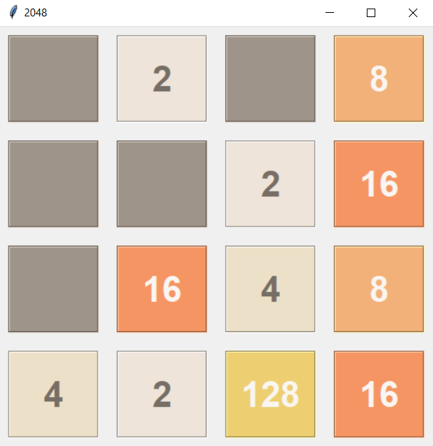
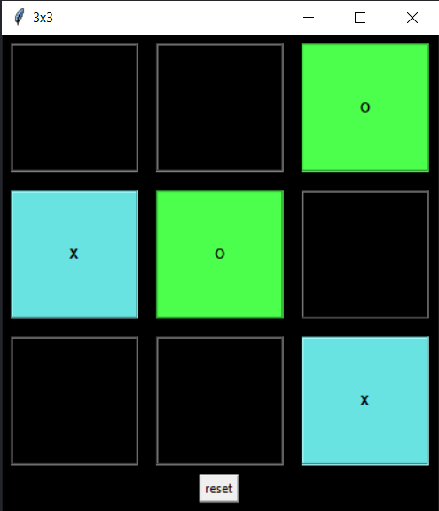
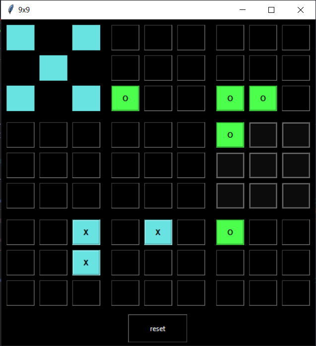
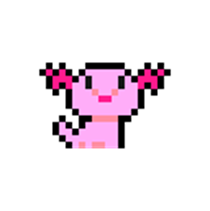
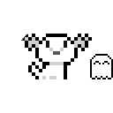
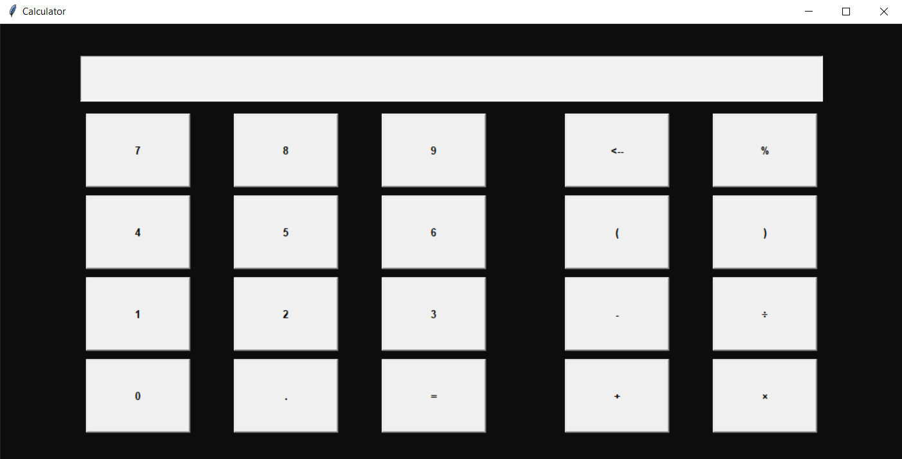
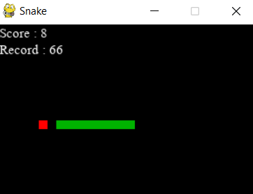

2048
inspired by: yangshun/2048-python
It's a solo game by Gabriele Cirulli, released on March 9, 2014.
I took the original colors of the game but if someone wants to make me a color palette I'm up for it.


The animation is different day and night.
Open the clock project →

This is a project I did for my computer class.
Open Brick Breaker →Ever since I learned to program, I have always wanted to make one.
It has different actions, colors and we can generate more than one at a time. You can move it anywhere on the screen and ask it to do specific actions.


Report (French), does not fully correspond to the latest version of the code.
In this repository you will find a lot of small python projects.
inspired by: yangshun/2048-python
It's a solo game by Gabriele Cirulli, released on March 9, 2014.
I took the original colors of the game but if someone wants to make me a color palette I'm up for it.

Works like a pack of cards.
(inspired by the book by Vincent Le Goff)
Little money game with game save.
(inspired by the book by Vincent Le Goff)
For when there are difficult choices to make.
Allows you to keep the same lists of choices each time, to choose between different numbers, ranges of numbers or words.
A little hangman game with game save.
(inspired by the book by Vincent Le Goff)
Spy game (the rules are explained at the beginning).
To play with several friends or family members (need at least 4 people).
A small calculator with tkinter.
It is pretty ugly :(


Enter your sudoku and check if it is right.
Translate text to morse or vice-versa (morse into latin alphabet).
Hear morse signals (sound, after translation or directly).
To download YouTube videos and its subtitles. It may be that for some video and subtitle it does not work; if you know why, I'd like you to send me a message :)